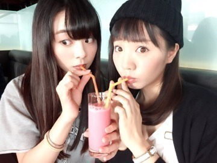
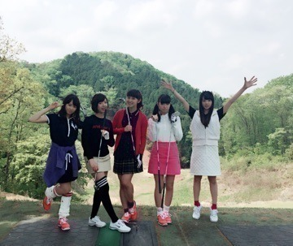
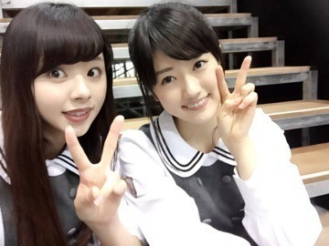

| 2015/06 03 Wed | ～のぎ天 台湾ゴル フ～ まに。 |
こんにちわ～U・x・U♡
今年に入ってから異様に『ポジティブ』という言葉に魅力を感じています． まにです♡ ろってぃ-です♡
今日も1日おつかれたま。

あみと2人でスムージーを飲んでます.＊
可愛いことするじゃん私ら。♡笑
どぅ？ 親によく目の形が似てるって言われるんだけど似てますか 笑？

ぁ，そういえば腕に輪ゴム付けてるじゃん？
これは必ずなんですよね...
小学生の頃からずっと右手に付けてるから，輪ゴムがあると落ち着くの。♡
だから仕事以外では99%は腕に輪ゴムがいるよ。。。
はいっ！ ということで，，，
皆さんweb番組「のぎ天」見てくださってますかぁ❤︎？
私は，台湾組であり，ゴルフ部でもあるので４週連続の参加となってます。笑
いやっ，来週も再来週もだから，6週かな？？
どんだけ出るんだよおっ‼︎って感じかもしれないですが，のぎ天大好きろってぃーは嬉しいです*\(^o^)/*❤︎
先ず，台湾。。
率直に言いますと「すごーーーーーく、楽しかった。」です.＊
本当にこうやって乃木團として台湾に行けたことに感謝しています．
新しい経験もできましたし，色々と勉強にもなりました！
台湾での1回目のLIVEでは，予想外の事が沢山起きて，全然納得のいくLIVEをつくることはできませんでした...
音がおかしくなって，急いでチューニングしたりして，てんぱってピックを落としちゃったり、、、（＾Ｏ＾）
でも！これもまた台湾に行かなきゃできなかった経験だし，その様なパプニングがあったからこそ学んだ事が沢山ありました。
そして，2回目のLIVEではメンバー皆揃って「いいLIVEができた！何より楽しかった！」と思える事ができました（＾Ｏ＾）
始まってすぐに隣でまいまいのストラップが抜けているのにはびっくりしましたけどね．へへ
とりあえず色々あって書ききれないけど，台湾は気温も人も温かくて楽しい国でした‼︎
はい、そしてゴルフ合宿！ばんざい．

のぎ天でも皆言ってましたが，，
普通に学校の厳しいゴルフ合宿でした．笑
1日目の暑さは凄まじかった。。
思わずスタッフさんに「すみません。ゴルフ皆で日焼けして帰ります．笑」と連絡をしてしまった程です*\(^o^)/*
でも合宿2日間、厳しかったけど楽しかったんですよねん♩
ゴルフって楽しー！と感じたと同時に、ゴルフの難しさを改めて痛感いたしましたぁぁorz❤︎
2日前，打ちっ放しにも行ってきましたよん。
カメラは回っておりません．笑
自主練です．笑
いつか役に立つ日が来るのを信じて頑張りまーす❤︎.＊(o^^o)
まにちま（全握LIVEのステージ横で）

ということで，
今日も明日も元気にポジティブに頑張りましょーーー*\(^o^)/*
皆だいすきぃ♡
コメント(308)
2015/06/03 14:42